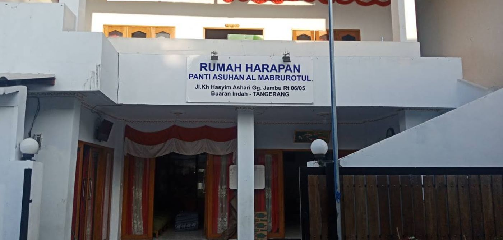
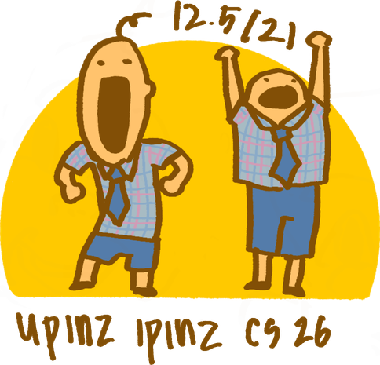

Yayasan Panti Asuhan Al-Mabrurotul Munawwaroh Al-Amanah

Siapa kami?
Instagram →
Kami adalah...
Sebuah community service group yang berisikan delapan orang, ya, DELAPAN ORANG!

Menjadi jembatan kepedulian yang menghadirkan hunian aman, layak, dan penuh kasih bagi bayi serta anak-anak di Yayasan Panti Asuhan Al-Mabrurotul Munawwaroh Al-Amanah, sekaligus mengapresiasi dedikasi mulia para pengurusnya.
VISI
MISI
Penggalangan Dana & Dukungan Sosial
- Menggalang kepedulian dan donasi publik secara transparan guna mendukung operasional serta pemenuhan sarana dan prasarana panti.
Pemenuhan Kebutuhan Spesifik Bayi & Anak
- Menyediakan makanan bergizi serta melengkapi kebutuhan pokok harian. Khususnya nutrisi, perlengkapan, dan perawatan harian untuk bayi dan anak-anak.
Peningkatan Keamanan & Keharmonisan Lingkungan
- Melakukan renovasi fasilitas fisik, seperti perbaikan pintu dan sarana kelayakan bangunan, demi menghadirkan ruang tinggal yang aman dan nyaman.
Apresiasi Dedikasi Pengurus
- Memberikan dukungan moral dan apresiasi khusus kepada para pengurus atas jasa, kesabaran, serta keikhlasan mereka dalam merawat anak-anak setiap hari.
Jumlah donasi diperbarui setiap minggu!
Dana terkumpul
Rp 0.00
Terima kasih telah berkontribusi!
Jl. Jambu No.30, RT.006/RW.005, Buaran Indah, Kec. Cipondoh, Kota Tangerang, Banten 15119